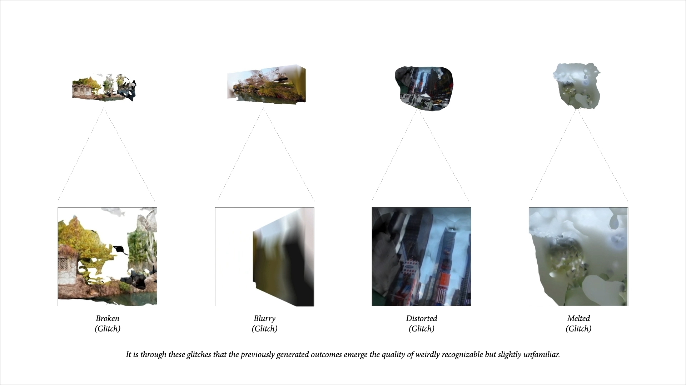

The project takes the glitches as an approach of opening up the memory world we are remembering and seeing. Showing the currently clear sceneries in the way we may remember them in the future when they actually disappear, the forms of memories are actually reminding people that the scene we are familiar with may finally die away from us some day.
To imitate the way we may rebuild the scene in our memory, the project embraces the same spirit and starts with exploring the aesthetic of photogrammetry as a software. Suggested by definition, photogrammetry is predominantly being used as a representation tool to create realistic digital replications of objects and space from the real world which is similar to the process we are recalling the memories. However, instead of its ability to faithfully recreate the real world which is similar to more advanced technology like LiDar, the project is more interested in the unexpected slippage and distorting result of photogrammetry due to its inaccuracy and dysfunctionality which we will call the aesthetic of photogrammetry.
It takes three steps to mimic the scenery we are dreaming about. Exploring how we are regenerating the scene from memory, analyzing the typical ways glitches happen in the process and replicating the effects onto the model. Four glitched iceberg models will be the outcome of the process.
After testing with videos from multiple sources on different photogrammetry softwares, the “misuse” of the softwares lead to their dysfunctionality and the hidden algorithms of how they are understanding the videos are shown. Taking the differences as different ways people are tending to memorize the same scene, the project concluded the four different typical glitches in the process of analyzing the dreamy aesthetic that is reminiscent of human memories including the broken, the blurry, the distorted and the melted. Replicating the aesthetic of photogrammetry through coding and implemented onto the model, the desired outcome without the undesired part of glitches are finally shown. In the project, the iceberg is taken as an example, since it’s somewhere everyone knows of but few have been to and may finally only exist in people’s collective memory after it actually dies away.

In this process of “glitching”, the project is actually taking the scenes that are familiar to people away from them and imagining the way future people recall them. The project is both an approach to understand the aesthetic of glitches caused by photogrammetry as software and also take it as an opportunity to call on people to pay more attention to and cherish the scenery right in front of them.